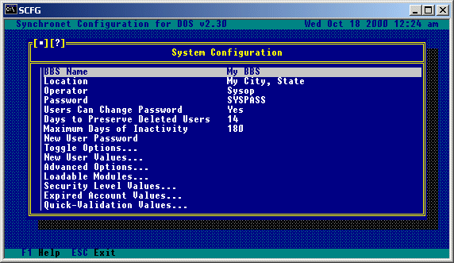
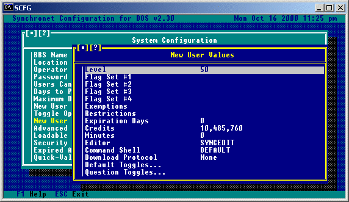
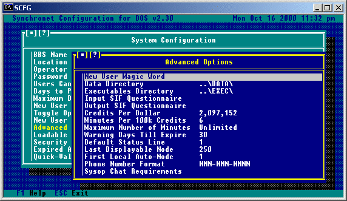
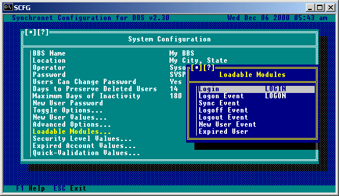
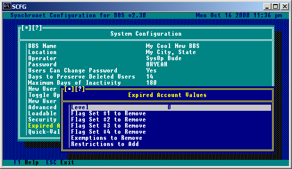
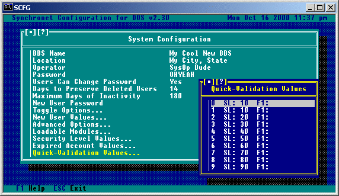

SCFG is the Synchronet Configuration Utility. It is a stand-alone console mode application (e.g. SCFG.EXE for Windows).
To run SCFG from the Synchronet Control Panel (Windows), select Configure from the BBS sub-menu on the menu bar.
Once SCFG has initialized, you will see a main menu titled "Configure" which looks something like this:
To manipulate the light-bar, use the UP and DOWN ARROW keys or type a letter or number in the option you wish to highlight. To highlight the first option of the menu, hit the HOME key. To highlight the last option of the menu, hit the END key. You'll notice that if you hit UP ARROW key when the light-bar is at the first option of the menu, the last option will become highlighted. This wrap effect also occurs when hitting the DOWN ARROW key when the light-bar is at the last option of the menu. To select the current highlighted option, hit ENTER. To exit SCFG, hit the ESC key.
Under "System", set your system's name (BBS Name), the sysop's name (You), the system location (City, State), and system password. The system password you enter here will be required for any remote sysop operations and is prompted for with an "SY:" prompt. Under "Message Options", set your system's QWK ID (Up to 8 character BBS name abbreviation). Under "Toggle Options" set "Allow Aliases" to "Yes" or "No" depending on if you want users to be known by their real names on your BBS or a personal alias.
Remember that at any time within SCFG, you can hit the F1 key to get online help about the current configuration window. Following is a more specific list of the commands available in the SCFG under System options.
BBS ID for QWK Packets: This is the ID that will be used in QWK packets. It is important that you set this to an abbreviation of your BBS name before users start using the QWK functions of your BBS. Only valid DOS filename characters can be used and the ID must begin with an alphabetic character. This ID will also serve as your system's QWK Network address, should you choose to join a QWK message network (e.g. DOVE-Net). Local Time Zone: This should be set to the time zone where your BBS is located. Maximum Retry Time: This is the maximum number of seconds the Synchronet message base library will wait for a locked message base to become unlocked. Under normal conditions, message bases are only left locked for an extremely short period of time. Maximum QWK Messages: This is the maximum number of messages which will be packed when a QWK packet is created. If the number of new messages to be packed exceeds this, the packing will be stopped after packing this number of messages. Setting this value to 0 sets the number of messages per packet to unlimited. Private e-mail is not included in the total number of messages and QWK network nodes are automatically exempt from this maximum. Pre-pack QWK Requirements: If this option is used (not blank), Synchronet will pre-pack any new messages into a QWK packet in the DATA\FILE directory for each user that meets this requirement. When that user calls to download their packet, it will automatically extract the pre-packed QWK (if it exists) and append to it. It is mainly intended for QWKnet nodes that feed from your BBS, but can also be used for long distance users that wish to save connect time and always read their messages via QWK. Purge E-mail by Age: This will allow electronic mail for your users (stored in DATA\MAIL.*) to be purged after a specific number of days (read or unread). Purge Deleted E-mail: This option can be set to "Daily" or "Immediately". If set to "Immediately", e-mail marked for deletion will be physically removed from the e-mail database immediately after the user exits the reading mail menu. If set to "Daily" (the suggested setting), e-mail is marked for deletion isn't physically removed from the database until the automatic daily event executes (sometime after midnight). Duplicate E-mail Checking: This option allows the setting of a number of message CRCs to be kept to check e-mail to insure that it is not a duplicate of another piece of e-mail. This option should be set to 0 (disabled) unless you specifically want duplicate e-mail disallowed, in which case a value of 2000 should be sufficient. Allow Anonymous E-mail: Setting this option to Yes will allow users with the 'A' exemption to send anonymous e-mail. Allow Quoting in E-mail: To allow users to quote from e-mail, this option should be set to Yes. Allow Uploads in E-mail: To allow users to attach files to e-mail, this option must be set to Yes. Allow Forwarding to NetMail: If you allow users to send NetMail on your BBS and want to allow your users to set their account to forwarding their e-mail to a NetMail address, set this option to Yes. Kill Read E-mail: If you would like to have any e-mail that has been read by the recipient automatically deleted by the message base maintenance program (SMBUTIL) set this option to yes. Users Can View Deleted Messages: This option allows all users or sysops/sub-ops the ability to view messages (posts/e-mail) marked for deletion (and optionally undelete them) before they are permanently removed from the message base. Extra Attribute Codes...: This option will give you a sub-menu of toggle options. These options tell Synchronet whether or not it should interpret color codes which are supported by other BBS packages.

BBS Name:
This is the name of the BBS. Try to be original. :-)
Location:
This is the city, state and/or other pertinent location information.
Operator:
This is the name of the system operator. Doesn't have to be the same
as user #1, but usually is.
Password:
This is the super-secret system password that only sysops should know.
Users Can Change Password:
If you want enhanced system security, it is suggested that you force
users to keep the original randomly generated password they were
assigned by setting this option to No. If you do allow users to change
their passwords, you can make them change their password periodically
with this selection.
Days to Preserve Deleted Users:
If a user is deleted, his slot will be preserved for this many days
since his last logon date. Preserved slots will not be written over
by new users. Preserved slots may be undeleted by the sysop.
Maximum Days of Inactivity:
If you wish that users that haven't logged on in a certain number of
days be automatically deleted, set this value to the maximum number
of days a user can be inactive before he is deleted. Users can be
exempted from the automatic deletion with the 'P' exemption. Setting
this value to 0 disables this feature (Unlimited inactivity).
New User Password:
If this field has a value, new users will have to enter this password
correctly before being able apply for access.
Selecting this option will bring you to the following sub-menu:
Allow Aliases:
If you wish the users of the BBS to be allowed to use aliases publicly,
set this option to Yes.
Allow Time Banking:
Set this option to Yes to allow users to store their time in a time
bank, or to convert their credits to time via the BBS.
Allow Credit Conversions:
Setting this option to Yes will allow users to be able to convert
credits to time.
Allow Sysop Logins:
To be able to perform sysop actions remotely, this option should be set
to Yes.
Echo Passwords Locally:
If this option is set to No, all BBS passwords will not be displayed
locally (characters will be replaced by an X). This includes passwords
entered during logon, passwords in the user editor, as well as
passwords normally displayed on the status line.
Short Sysop Page:
If set to Yes, this sysop page will be a short series of beeps,
otherwise a continuous sysop page will be used.
Sound Alarm on Error:
If the above option (beep locally) is toggled off, but you still wish
to have errors produce an audible alarm, you should toggle this option
to Yes.
Include Sysop in Statistics:
It is suggested that you set this option to No, so that the sysop's
activity on the BBS is not included in the usage statistics.
Closed to New Users:
If you wish to disallow access to any new users, set this option to
Yes.
Use Location In User Lists:
If you wish the location (City, State) of the user to be displayed
in user listings instead of the user note, set this option to Yes.
Setting this option to No will display the user's note (sysop created)
if one has been created. The option should be set to Yes if using
Caller-ID since the user's note may contain their phone number.
Military (24 hour) Time Format:
Use this option to toggle your BBS between 12 and 24 hour time formats.
European Date Format (DD/MM/YY):
This option should ONLY be toggle to Yes if you are in a European
country which uses this date format. All countries using the MM/DD/YY
format should leave this option set to No. If your BBS has been running
for any length of time with this option set to No, you should NOT
change it to Yes.
User Expires When Out-of-time:
Useful for BBSs which charge users based on time, this option, when set
to Yes, will set a user to the expired account values once the user's
time runs out.
Display Sys Info During Logon: Display "hard-coded" system information during BBS logon process.
Display Node List During Logon: Display list of active BBS nodes during BBS logon process.

This option allows you to modify the security values assigned to a new user account. You can also set the number of credits and minutes new users start off with. If you have configured an alternate command shell or external editors, you may select one of these as the default for new users. See the User Editor chapter for more information about user account values.
The 'Default Toggles' are used to set the account defaults that users will have when they log on to the system as a new user. These account defaults can be changed by the user at logon, or while on the system from the user defaults menu.
The 'Question Toggles' are used to enable/disable the different questions which new users will be asked when logging on to the BBS. The 'Force Unique...' question toggles are used to force users to pick a string that is not being used by any of the other users currently in the system user database.

New User Magic Word:
If this field has a value, it is assumed the sysop would have put
some reference to this "magic word" in NEWUSER.MSG and the user
will be prompted for this after he enters his own assigned password.
If he doesn't enter it correctly, it is assumed he didn't read the
text displayed to him and he is disconnected.
Data Directory:
This is the path to the directory where all the data files for
Synchronet will be stored. This value should not be changed unless
necessary.
Logs Directory:
This is the path to the directory where all the logs files for
Synchronet will be stored. This value should not be changed unless
necessary.
Exec Directory:
This is the path to the directory where all the executable files for
Synchronet are stored. This value should not be changed unless
necessary.
Mods Directory:
This is the path to the directory where sysop-modified modules
(.bin and .js files) for Synchronet are stored. Normally, this
directory will be empty. If a sysop wishes to modify a stock/standard
module and protect the modified file from being over-written during
subsequent Synchronet upgrades, the sysop should copy the file from
the Exec directory to the Mods directory where it will take precedence
over the file by the same name in the Exec directory.
Input SIF Questionnaire:
This is the name of a SIF file that resides the text directory that
all users will be prompted to answer upon logging on the first time.
See SIF for more information.
Output SIF Questionnaire:
This is the name of the SIF file that is used by the sysop to view
the users' answers to the input SIF questionnaire. If this value is
left blank, the input SIF questionnaire is used. This output SIF
questionable should be identical to the input SIF with the exception
of the text content. See SIF for more information.
Credits Per Dollar:
This is the monetary value of a credit (How many credits per dollar).
This value should be a power of 2 (1, 2, 4, 8, 16, 32, 64, 128, etc.)
since credits are usually converted by 100 kilobyte (102400) blocks.
To make a dollar worth two megabytes of credits, set this value to
2,097,152 (a megabyte is 1024*1024 or 1048576).
Minutes Per 100k Credits:
This is the value of a minute of time online. Credits can be converted
to minutes by the user if allowed by the command shell. Credits are
only converted in 100k (102400) blocks. This field is the number of
minutes to give the user in exchange for the 100k credit block.
Maximum Number of Minutes:
This value is the maximum total number of minutes a user can have. If
the user has this number of minutes or more, he will not be allowed
to convert credits into minutes. A sysop can add minutes to a user's
account regardless of this maximum. If this value is set to 0, the
user will have no limit on the total number of minutes he can have.
Warning Days Till Expire:
When a users account is about to expire, the BBS will begin sending
expiration warning messages to the users notifying them this many days
in advance.
Default Status Line (v2 Only):
This is the number of the status line that will be displayed by default
at the bottom of the screen while the user is online.
Last Displayable Node:
This is the number of the last node that will be viewable by the users.
Any nodes which exist above this number will be "invisible" nodes and
cannot be seen by anyone.
Phone Number Format:
This is the format used for phone numbers in your local calling
area. Use N for number positions, A for alphabetic, or ! for any
character. All other characters will be static in the phone number
format. An example for North American phone numbers is NNN-NNN-NNNN.
Sysop Chat Override:
Any user meeting the criteria set here will be able to page the sysop
regardless of the status of the sysop availability.
User Database Backups: Setting this option to anything but 0 will enable automatic daily backups of the user database. This number determines how many backups to keep on disk (i.e. data/user/user.#.dat and data/user/name.#.dat). Mail Database Backups: Setting this option to anything but 0 will enable automatic daily backups of the mail database. This number determines how many backups to keep on disk (i.e. data/mail.#.*). Control Key Pass-through: This value is a 32-bit hexadecimal number. Each set bit represents a control key combination that will not be handled internally by Synchronet or by a Global Hot Key Event. To disable internal handling of the Ctrl-C key combination (for example) set this value to 8. The value is determined by taking 2 to the power of the ASCII value of the control character (Ctrl-A is 1, Ctrl-B is 2, etc.). In the case of Ctrl-C, taking 2 to the power of 3 equals 8. To pass-through multiple control key combinations, multiple bits must be set (or'd together) to create the necessary value, which may require the use of a hexadecimal calculator. If unsure, leave this value set to 0, the default.
 The Loadable Modules options are used for loading JavaScript (.js) or Baja (.bin) modules during various stages of the BBS operation. Selecting one of the functions will prompt you for the base filename of the module (excluding the file extension - .js or .bin) to be used when that event occurs. JavaScript (.js) modules take precedence over Baja (.bin) modules. Following is a brief description of when each of the Loadable Modules occur during the BBS operation: Login: This module is REQUIRED for remote and local logins. Occurs when a user is connected, immediately after the Synchronet copyright notice is displayed. Logon Event: Occurs immediately after Login (above). Sync Event: This is a Synchronization Event and occurs each time the BBS performs a node synchronization (e.g. when node messages are received, node status is read, etc...basically continuously while a user is online). Logoff Event: Occurs ONLY when a user does a slow logoff. Does NOT occur when users hang up on the BBS or do a fast logoff. Logout Event: This is an offline event that occurs after a user has disconnected from the BBS, either by logging off or hanging up. New User Event: Occurs at the end of a new user procedure (e.g. after the user has logged on, left new user feedback, and anything else that is required of a new user). Expired User: This is an offline event that occurs during Synchronet's internal daily event (after the first caller at the beginning of a new day).
This option allows you to define the operating parameters of the Security Levels (0-99). Selecting the desired security level will bring you to another menu similar to the following:
Here you can modify the corresponding values for that particular security level. These values will be given to ALL users who have the selected security level. Many of these values may be overridden by giving certain users the necessary exemptions (if required). For example, the 'T' exemption will exempt a user from any time limitations.
 This sub-menu contains the account values for expired user accounts. When a user account expires, the information contained here will be applied to that user account.
 This is where you define the values of the quick-validation sets (0-9). Selecting a level from this list will bring you to another menu similar to the following:
These are used to quickly set a user's Level, Flags, Restrictions and Exemptions, as well as extend their expiration date and add credits to their account. A user can be quick-validated with the 'V' command from the Telnet/RLogin-based User Editor.
Users may be created using one of the available user editors or by logging on as "new" via Telnet or RLogin.
The first user account created (via Telnet or RLogin) will automatically be given Sysop-level access (e.g. Security level 90, all flags and all exemptions). For this reason, the System Password is prompted for (with the SY: prompt) during the first new user creation process.
The sysop account is traditionally the first user record in the database (i.e. user #1). This user account should not have the alias of Sysop - use your real name or a handle instead. Synchronet automatically treats the alias of Sysop special and forwards any mail received for "Sysop" to user #1.
During the default Telnet/RLogin logon process, the sysop user account will be prompted whether to create a "Guest" account or not (via the exec/makeguest.js module). It is recommended that you answer "Yes" to create a Guest account. This will allow anonymous FTP logins as well as "read only" access to your other servers and services which encourage users to experience your BBS without requiring them to create a user account first.
The sysop account's Security Flag 4G is used by the default logon module (exec/logon.js) to determine whether or not to prompt the sysop to create the Guest account. If you answered "No" to the create Guest and "Ask again later?" prompts, you can either run the makeguest.js module manually, or restore the 4G security flag to the sysop account to be prompted during the next logon.
Copyright © 2006 by Rob Swindell
Synchronet BBS Software (Synchronet)
Version 3 is comprised of several documentation,
library, executable, and source code
files, all of which are covered by the
GNU General Public License with the exception of the following portions
covered by
the GNU Lesser General Public License:
SMBLIB and XSDK.
Synchronet Version 2 (for DOS and OS/2) and its source code was released to the
Public Domain by Digital Dynamics
in 1997 and remains Public Domain software today.
Synchronet Version 3 is not Public Domain software.
For the complete Copyright Information please read the Copyright Document .